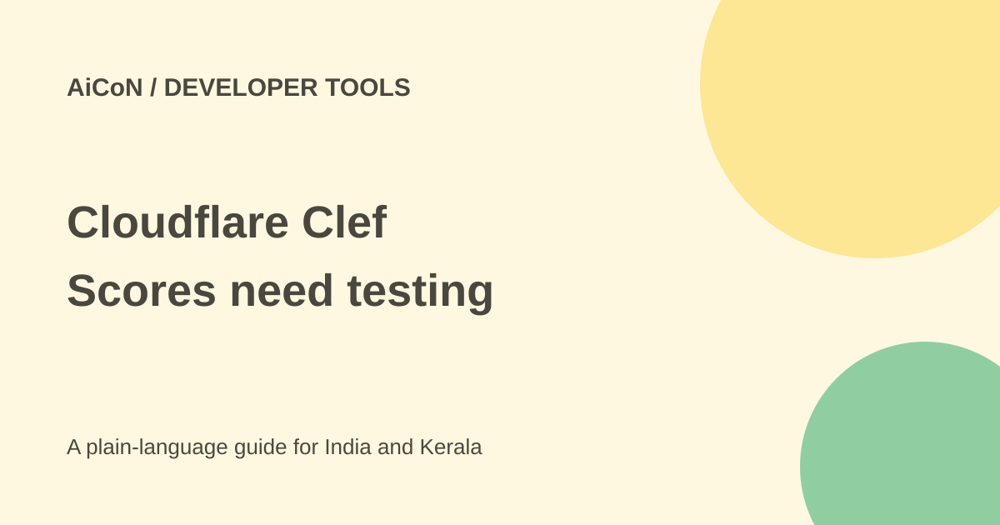

Cloudflare Clef: decision scores, hardware and costs
Clef is Cloudflare's decision model for answering typed questions with probabilities. It is not a chatbot that writes free-form text. You can use hosted Workers AI or evaluate the Apache-licensed weights on suitable hardware.

What does it return?
You provide a state and a structured list of questions with permitted answers. Clef returns decisions and probabilities in one model pass. Examples include classifying a support request or choosing the next tool in a workflow.
The official model card describes Clef as a 27-billion-parameter multimodal model accepting text, JSON, images and video. The hosted page lists a 65,536-token context window and vision support. Clef-flash is a separate lower-latency option; check its own limits and price rather than assuming both are identical.
Confidence is not certainty
A high score can still be wrong. Poor choices, ambiguous instructions or a missing correct answer can produce a bad result. The model's benchmark scores are Cloudflare's reported evaluations, not a guarantee for Malayalam text or your own workflow.
The original post compared latency with Jev. Such figures depend on hardware, hosting, network and task size. Test the exact deployment you plan to use instead of budgeting around a launch chart.
How to evaluate safely
- Read the official model card, hosted model page and licence.
- Choose local weights or a hosted account after checking hardware and costs.
- Use invented text or images with no customer information.
- Define a schema containing every plausible answer and an uncertainty route where appropriate.
- Run a labelled test set that includes easy, ambiguous and out-of-scope cases.
- Measure accuracy, confidence calibration, latency and total cost.
- Keep human review for payments, private data, destructive actions and messages.
- Document failures and version changes before considering a production rollout.
Free weights, paid resources
The released weights are Apache 2.0. That does not make a 27B model free to operate. Local use needs enough memory, storage and compute; rented hardware and electricity can cost money.
The checked Workers AI Clef page lists US$0.24 per million input tokens, about ₹23.14 at the approximate ₹96.43/USD rate used here, before taxes or fees. Check the current model page and account allowance before use. Do not assume a general Workers account gives unlimited free inference.
For Indian developers
A simple routing experiment may be useful, but verify local-language quality and any workplace data rules. A classifier should not be the only defence against harmful instructions or unauthorised tool use.
Open weights let you inspect and test a model, but a licence is not a security audit. Keep credentials outside test prompts and review the actual action selected by any system using the scores.
What changed since the original post?
We added the official model's 27B size, video input and the exact hosted context window. Pricing is tied to Clef's page rather than assumed for every variant. No model was run or vendor benchmark reproduced.
Frequently asked questions
Will it write a long reply?
No. It produces structured decisions and scores.
Does Apache licensing remove running costs?
No. Compute, storage and hosted calls can cost money.
Can one score authorise a payment?
Do not use it as the sole authority for a consequential action.
Sources: Official model card · Workers AI model and price · Approximate exchange-rate source · Cloudflare launch and variant details. Checked 7 October 2026.